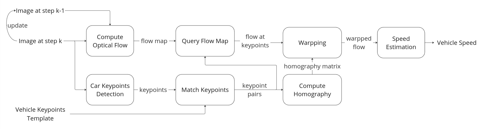
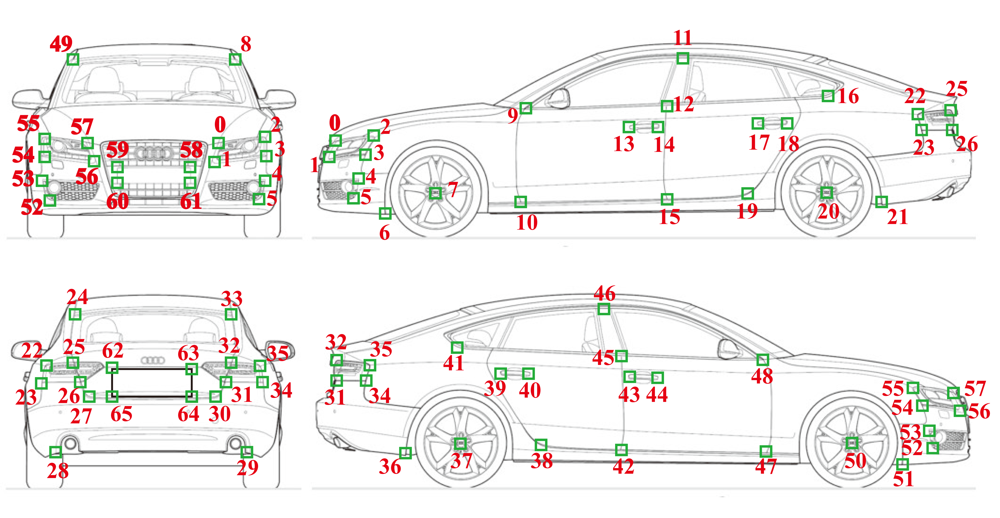
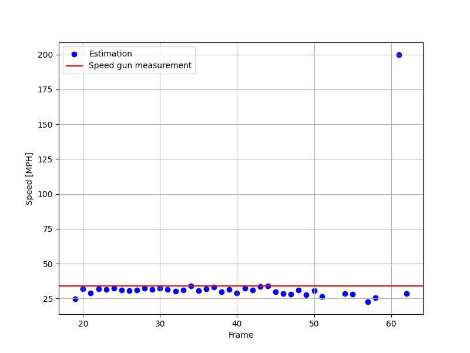
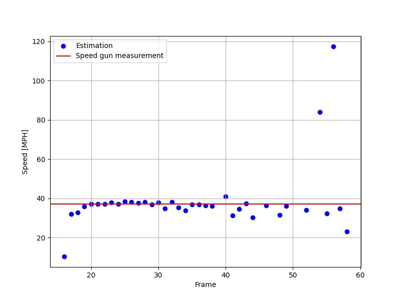
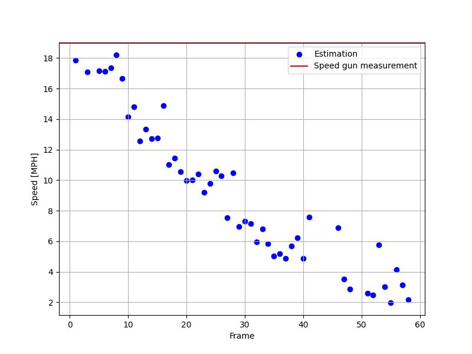
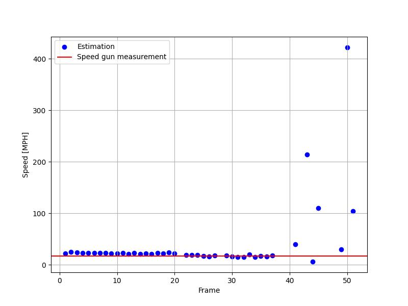
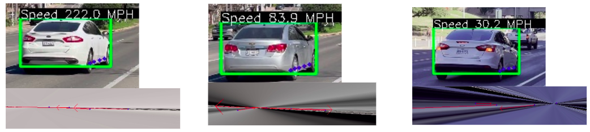

Final Project: Vehicle Speed Estimation from Non-Stationary Camera (GitHub repo)
Final Report
Dependency (for car keypoint detection): OpenPifPaf
Proposed Pipeline

Car Keypoint Model

Demo 1

Speed estimation (process offline)
Comparision to speed gun measurment.
Visual Result 2

Speed estimation (process offline)
Comparision to speed gun measurment.
Visual Result 3

Speed estimation (process offline)
Comparision to speed gun measurment. You can see from the video that the traffic light is turing red, so the estimation result make sense.
Visual Result 4

Speed estimation (process offline)
Comparision to speed gun measurment.
Limitation
Currently not handling poor keypoints that can cause singularity issue of the homography matrix. See image below. Due to poor viewing angle, the detected keypoints are almost collinear.
